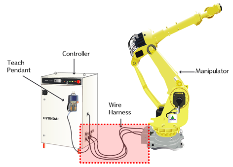

伺服板无法收到绝对值编码数据。绝对值编码数据在打开控制器电源和最初打开马达电源时都会收到，共收到两次。因此，E0103错误是只有在开机初始化时和最初打开马达电源时才能检测到。不过，有时可能因与控制器无关的问题使CPU板重启并进行初始化，此时还可检测到新的错误。
(1) 请确认编码器的供应电压。
检验供应到编码器的电源电压时，施加于编码器侧连接器的电压应处于5V±5% (4.75V ~ 5.25V)范围内。若编码器侧连接器的电压下降到4.75V以下，编码器不会正常工作，易造成上述错误。
请测量编码器侧连接器pin(G-H)的电压。

图 5.21 编码器输入电源的测量方法
若被测电压低于基准电压，请旋转编码器电源供应装置的+5V ADJ(E)电压调整端子，使得编码器的连接器电压介于基准电压范围内。

图 5.22 编码器电源的调整方法
(2) 请检查马达制动器是否被解除
在马达处于Off的状态下，操作BD461顺序电路板的制动器开关，检查马达制动器是否正常被解除。不过，制动器被解除时会导致机器人轴下落，请务必采取适当的安全措施，并通过迅速按下/放开制动器开关，尽量减小机器人轴的下落量。
图 5.23 BD461电路板外观
TSW03 : 主轴(1、2、3轴)制动器解除电源强制输出
TSW04 : 首轴(4、5、6轴)制动器解除电源强制输出
TSW05 : 附加轴(7轴)制动器解除电源强制输出
TSW06 : 附加轴(8轴)制动器解除电源强制输出
(3) 请更换并测试伺服板。
更换伺服板后，若不发生错误，这就表示伺服板的不良。请把伺服板更换为正常品。
图 5.24 BD540 伺服板更换方法
(4) 请更换并测试马达。
更换伺服马达后，若不发生错误，这就表示伺服马达的不良。请把伺服马达更换为正常品。下图显示HX165机器人的各轴马达位置，其它机器人请参考该型号的维修说明书并予以更换。
图 5.25 HX165 机器人的各轴马达位置
(5) 请检查配线状态。
请按照以下顺序检查编码器的配线状态。
步骤一: 请检查与编码器配线有关的连接器是否出现接触不良。
步骤二: 请检查编码器电线是否出现短路。请用万用表(测试仪)等装置以1:1方式确认各相的配线状态。
步骤三: 请更换并测试编码器的配线状态。
在编码器电线没有断线的状态下，若出现屏蔽线（Shield line）的接触不良，或者，编码器信号线与其他电线或机器人本体金属部位接触，此时仅靠短路检测方式则无法检测出这些异常，因此，请更换并测试配线状态。
1. 请检查控制器内部配线。
- 请检查CNEC1、2(BD540)连接器与SMPS(P5E、M5E)之间的接线。
- 请检查CNEC1、2(BD540)连接器与CNR4之间的接线。

图 5.26 控制器内部的编码器配线
2. 请检查控制器与机器人之间的接线状态。
请检查CNR4与CNR04之间的接线状态。

图 5.27 机器人与控制器之间的基本安装结构图

图 5.28 机器人本体与控制器的连接
3. 请检查本体内部配线状态。
- 请检查CER1与CNE1~6(编码器侧连接器)之间的接线状态。
- 配线检查请参考机器人维修说明书中的接线图。

图 5.29 机器人内部配线